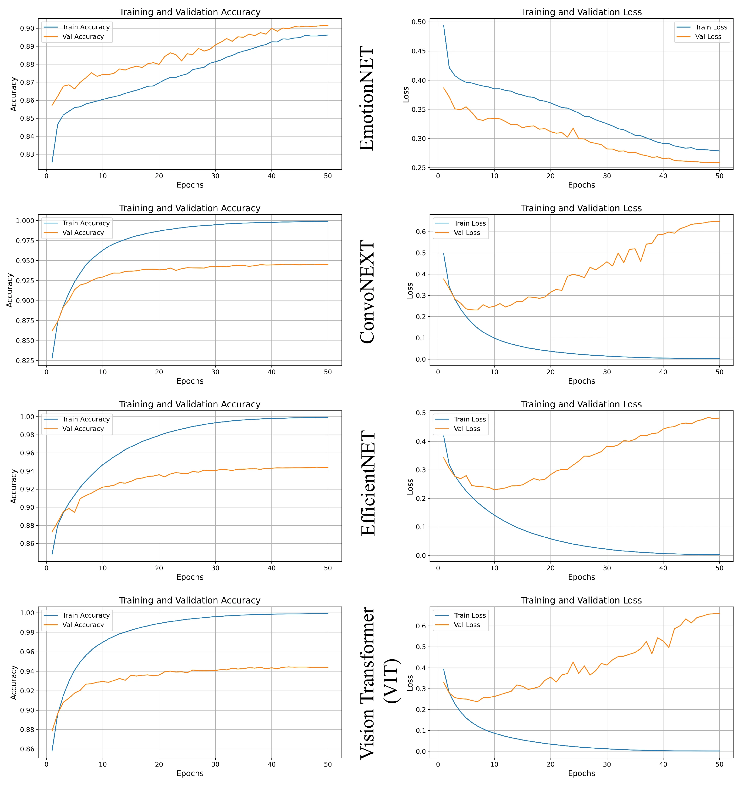
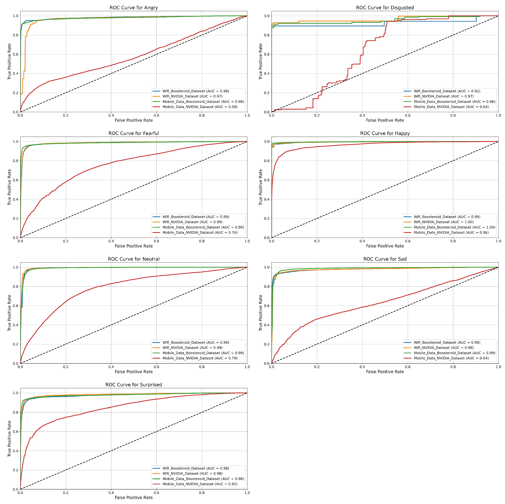
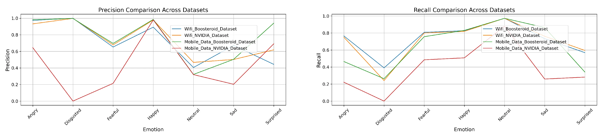

PUBLICATION论文 · Sensors · 2025
ABSTRACT摘要
Cloud gaming has rapidly transformed the gaming industry, allowing users to play games on demand from anywhere without the need for powerful hardware. However, traditional Quality of Experience (QoE) assessment methods that rely on post-session surveys often fail to capture actual user experience. Many players skip feedback forms or provide dishonest responses, and Service Level Agreement (SLA) compliance does not guarantee perceived quality. This creates a critical challenge for cloud service providers in accurately identifying QoE and improving actual services. 云游戏迅速改变了游戏行业，使用户无需强大硬件即可随时随地按需玩游戏。然而，依赖会后调查的传统体验质量（QoE）评估方法往往无法捕捉实际用户体验。许多玩家跳过反馈表或提供不诚实的回复，且服务级别协议（SLA）的合规性并不能保证感知质量。这为云服务提供商准确识别QoE和改进实际服务带来了严峻挑战。
We propose a novel deep learning-based QoE assessment framework called EmotionNET, which evaluates user experience through real-time facial emotion recognition during cloud gaming sessions in a virtual reality (VR) environment. EmotionNET is based on a convolutional neural network (CNN) architecture with custom enhancements including CosineAnnealingLR scheduling, multiple dropout layers, gradient clipping, and AdamW optimization. We compare EmotionNET against three state-of-the-art deep learning techniques, ConvoNEXT, EfficientNET-B0, and Vision Transformer (ViT), all trained on an identical custom-developed dataset to ensure a fair evaluation of emotion-based QoE prediction. 我们提出了一个名为EmotionNET的新型基于深度学习的QoE评估框架，通过在虚拟现实（VR）环境中的云游戏会话期间进行实时面部表情识别来评估用户体验。EmotionNET基于卷积神经网络（CNN）架构，并进行了定制增强，包括余弦退火学习率调度、多层dropout、梯度裁剪和AdamW优化。我们将EmotionNET与三种最先进的深度学习技术、ConvoNEXT、EfficientNET-B0和Vision Transformer (ViT)、进行比较，所有模型均在相同的自定义开发数据集上训练，以确保对基于情感的QoE预测进行公平评估。
All models are trained and evaluated on a custom dataset collected from 30 participants playing Fortnite under two network conditions, WiFi and 5G mobile data, across two cloud platforms (NVIDIA GeForce NOW and Boosteroid). EmotionNET achieves 98.9% training accuracy and 87.8% validation accuracy, outperforming ConvoNEXT (94.9%), EfficientNET (92%), and ViT (91%). On stable WiFi networks, EmotionNET maintains near-perfect AUC scores (0.99), while performance degrades under mobile data conditions. These findings demonstrate that facial expressions are strongly correlated with network QoE and that EmotionNET provides a robust, scalable alternative to subjective surveys. 所有模型均在从30名参与者收集的自定义数据集上进行训练和评估，这些参与者在两种网络条件（WiFi和5G移动数据）下玩Fortnite，跨越两个云平台（NVIDIA GeForce NOW和Boosteroid）。EmotionNET实现了98.9%的训练准确率和87.8%的验证准确率，超越了ConvoNEXT（94.9%）、EfficientNET（92%）和ViT（91%）。在稳定的WiFi网络上，EmotionNET保持接近完美的AUC分数（0.99），而在移动数据条件下性能下降。这些发现表明面部表情与网络QoE密切相关，且EmotionNET为传统主观调查提供了一种稳健、可扩展的替代方案。
METHOD方法
Thirty participants (age 18–35, mean 26.4) with at least one year of gaming experience played Fortnite for 20-minute sessions. We used two cameras: a front camera capturing facial expressions at 25 FPS and a back camera recording the gaming screen. Data was collected under two network conditions: WiFi (33.96 Mbps down / 38.17 Mbps up) and 5G mobile data (21.33 Mbps down / 12.33 Mbps up), across NVIDIA and Boosteroid cloud platforms. Seven emotion categories were annotated: Angry, Disgusted, Fearful, Happy, Neutral, Sad, and Surprised. 30名参与者（年龄18-35岁，平均26.4岁），至少一年游戏经验，进行20分钟的Fortnite游戏会话。我们使用两个摄像头：前置摄像头以25 FPS捕捉面部表情，后置摄像头记录游戏屏幕。数据在两种网络条件下收集：WiFi（33.96 Mbps下载/38.17 Mbps上传）和5G移动数据（21.33 Mbps下载/12.33 Mbps上传），跨越NVIDIA和Boosteroid云平台。标注了七种情感类别：愤怒、厌恶、恐惧、快乐、中性、悲伤和惊讶。
EmotionNET is a custom CNN-based model for facial emotion recognition during gameplay. It incorporates a CosineAnnealingLR scheduler, multiple dropout layers to prevent overfitting, gradient clipping for training stability, custom data transformations, and the AdamW optimizer. The model processes 48×48 grayscale input images and classifies them into seven emotion categories. These architectural choices enable EmotionNET to achieve superior generalization compared to standard CNN baselines, reaching 98.9% training accuracy and 87.8% validation accuracy. EmotionNET是一个定制的基于CNN的模型，用于游戏过程中的面部表情识别。它采用余弦退火学习率调度器、多层dropout防止过拟合、梯度裁剪保证训练稳定性、自定义数据变换和AdamW优化器。该模型处理48×48灰度输入图像，并将其分类为七种情感类别。这些架构选择使EmotionNET相比标准CNN基线实现了卓越的泛化能力，达到98.9%的训练准确率和87.8%的验证准确率。
To validate EmotionNET's robustness, we implemented three well-known deep learning techniques: ConvoNEXT (ResNet-based, 94.9% accuracy, moderate complexity with overfitting issues), EfficientNET-B0 (92% accuracy, moderate complexity), and Vision Transformer (ViT) (Transformer Encoder, 91% accuracy, moderate complexity). All models were trained on identical custom datasets to ensure a fair comparison of their ability to predict emotion-based QoE in cloud gaming. 为验证EmotionNET的鲁棒性，我们实现了三种著名的深度学习技术：ConvoNEXT（基于ResNet，94.9%准确率，中等复杂度，存在过拟合问题）、EfficientNET-B0（92%准确率，中等复杂度）和Vision Transformer (ViT)（Transformer编码器，91%准确率，中等复杂度）。所有模型均在相同的自定义数据集上训练，以确保对其预测云游戏中基于情感的QoE的能力进行公平比较。
We evaluated model performance using accuracy, precision, recall, F1-score, and ROC-AUC curves across four dataset splits: WiFi-NVIDIA, WiFi-Boosteroid, Mobile-NVIDIA, and Mobile-Boosteroid. This cross-network evaluation reveals how latency and bandwidth fluctuations impact facial emotion recognition accuracy, providing critical insights into network-aware QoE assessment for consumer cloud gaming applications. 我们使用准确率、精确率、召回率、F1分数和ROC-AUC曲线在四个数据集分割上评估模型性能：WiFi-NVIDIA、WiFi-Boosteroid、移动数据-NVIDIA和移动数据-Boosteroid。这种跨网络评估揭示了延迟和带宽波动如何影响面部表情识别准确率，为消费者云游戏应用的感知网络QoE评估提供了关键见解。

Fig. 3 — Training and validation accuracy/loss curves for EmotionNET, ConvoNEXT, EfficientNET, and ViT across 50 epochs. EmotionNET demonstrates superior convergence and minimal overfitting. © 2025 MDPI. 图3 — EmotionNET、ConvoNEXT、EfficientNET和ViT在50个epoch内的训练和验证准确率/损失曲线。EmotionNET展示了卓越的收敛性和最小的过拟合。© 2025 MDPI。RESULTS结果
EmotionNET achieves 98.9% training accuracy and 87.8% validation accuracy, demonstrating excellent generalization with minimal overfitting. In comparison, ConvoNEXT reaches 94.9% training accuracy but suffers from overfitting. EfficientNET-B0 achieves 92% accuracy, while ViT achieves 91% accuracy. EmotionNET's balanced performance across precision and recall makes it the most reliable model for deployment in real-time cloud gaming QoE assessment. EmotionNET实现了98.9%的训练准确率和87.8%的验证准确率，展示了卓越泛化能力和最小过拟合。相比之下，ConvoNEXT达到94.9%的训练准确率但存在过拟合问题。EfficientNET-B0达到92%准确率，而ViT达到91%准确率。EmotionNET在精确率和召回率方面的平衡性能使其成为实时云游戏QoE评估中最可靠的部署模型。
On stable WiFi networks, EmotionNET maintains near-perfect AUC scores (0.99) across most emotion categories. However, under 5G mobile data conditions, performance degrades significantly—particularly on the NVIDIA dataset, where AUC drops to 0.70 for Fearful and 0.76 for Happy. The Boosteroid mobile dataset shows more resilience, but overall accuracy still declines compared to WiFi. These results confirm that network latency and instability directly impact facial emotion recognition quality and perceived QoE. 在稳定的WiFi网络上，EmotionNET在大多数情感类别上保持接近完美的AUC分数（0.99）。然而，在5G移动数据条件下，性能显著下降——特别是在NVIDIA数据集上，恐惧情感的AUC降至0.70，快乐情感降至0.76。Boosteroid移动数据集表现出更强的韧性，但整体准确率仍低于WiFi。这些结果证实网络延迟和不稳定性直接影响面部表情识别质量和感知QoE。
ROC-AUC analysis shows EmotionNET consistently outperforms comparative models across all seven emotion categories. While all models achieve high performance on Happy and Neutral emotions, they universally struggle with Disgusted (AUC as low as 0.43 for EfficientNET). EmotionNET maintains strong precision and recall for Angry, Fearful, Sad, and Surprised categories, whereas ConvoNEXT, EfficientNET, and ViT exhibit significant variability and pronounced performance drops under mobile data conditions. ROC-AUC分析显示，EmotionNET在所有七种情感类别上始终优于对比模型。虽然所有模型在快乐和 neutral 情感上表现良好，但它们在厌恶情感上普遍表现不佳（EfficientNET的AUC低至0.43）。EmotionNET在愤怒、恐惧、悲伤和惊讶类别上保持较高的精确率和召回率，而ConvoNEXT、EfficientNET和ViT在移动数据条件下表现出显著的变异性和明显的性能下降。

Fig. 7 — ViT ROC curves across seven emotion categories. Performance degrades noticeably on mobile data (red curve), especially for Fearful and Disgusted emotions. © 2025 MDPI. 图7 — ViT在七种情感类别上的ROC曲线。移动数据（红色曲线）上性能明显下降，尤其是恐惧和厌恶情感。© 2025 MDPI。
Fig. 9 — Precision and recall comparison across datasets for ConvoNEXT. Mobile data NVIDIA dataset (red) shows severe degradation in Disgusted and Neutral categories. © 2025 MDPI. 图9 — ConvoNEXT跨数据集的精确率和召回率比较。移动数据NVIDIA数据集（红色）在厌恶和中性类别上表现出严重退化。© 2025 MDPI。LIMITATIONS & FUTURE WORK局限性与未来工作
Network variability impact. Mobile data latency fluctuations significantly degrade facial emotion recognition accuracy. Future models should incorporate latency-aware adaptation mechanisms to maintain robustness under dynamic network conditions and varying bandwidth constraints. 网络变异性影响。移动数据延迟波动显著降低了面部表情识别准确率。未来模型应纳入延迟感知自适应机制，以在动态网络条件和变化带宽约束下保持鲁棒性。
Dataset scope. The current dataset focuses exclusively on Fortnite. Other game genres (turn-based, puzzle, horror) may evoke different emotional response patterns that require additional training data and domain-specific augmentation strategies. 数据集范围。当前数据集仅专注于Fortnite。其他游戏类型（回合制、益智、恐怖）可能引发不同的情感反应模式，需要额外的训练数据和领域特定的增强策略。
Single-modality constraint. The framework relies solely on facial expressions. Integrating physiological signals such as heart rate and gaze tracking could enhance QoE assessment reliability, particularly under challenging network conditions where facial cues alone may be insufficient. 单模态约束。该框架仅依赖面部表情。整合心率、眼动追踪等生理信号可增强QoE评估可靠性，特别是在面部表情线索可能不足的挑战性网络条件下。
Edge deployment. Current implementation requires cloud-server processing for frame extraction and inference. Deploying EmotionNET as an edge AI model would reduce transmission delays and improve real-time applicability for consumer cloud gaming platforms. 边缘部署。当前实现需要云服务器进行帧提取和推理。将EmotionNET部署为边缘AI模型可减少传输延迟，提高消费者云游戏平台的实时适用性。
BIBTEX引用
@article{jumani2025qoe,
author = {Jumani, Awais Khan and Shi, Jinglun and Laghari, Asif Ali and Amin, Muhammad Ahmad and Nabi, Aftab ul and Narwani, Kamlesh and Zhang, Yi},
title = {Quality of Experience (QoE) in Cloud Gaming: A Comparative Analysis of Deep Learning Techniques via Facial Emotions in a Virtual Reality Environment},
journal = {Sensors},
year = {2025},
volume = {25},
number = {5},
pages = {1594},
publisher = {MDPI},
doi = {10.3390/s25051594}
}COPYRIGHT NOTICE版权声明
© 2025 by the authors. Licensee MDPI, Basel, Switzerland. This article is an open access article distributed under the terms and conditions of the Creative Commons Attribution (CC BY) license. You may use, distribute, and reproduce in any medium, provided the original work is properly cited. © 2025 作者。许可方 MDPI，瑞士巴塞尔。本文是根据知识共享署名（CC BY）许可条款分发的开放获取文章。只要正确引用原始作品，您可以在任何媒介上使用、分发和复制。
This page is a personal academic landing page. The full paper is available via MDPI Sensors. All figures are reproduced under the Creative Commons Attribution License. 本页面为个人学术着陆页。完整论文可通过MDPI Sensors获取。所有图表均在知识共享署名许可下转载。